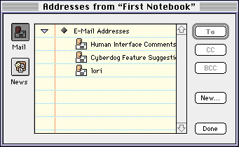

Legacy Document
Important: The information in this document is obsolete and should not be used for new development.
Important: The information in this document is obsolete and should not be used for new development.


Supporting Parts
There are a number of OpenDoc parts provided with Cyberdog, such as the log and the notebook, that support the user when using Cyberdog. This section describes the roles these Cyberdog supporting parts play. As a developer, you can continue to use the supporting parts supplied by Cyberdog, or you can subclass the extensions in the Cyberdog class library to create your own custom parts.Log
As the user navigates from location to location, Cyberdog automatically maintains a log that shows all the locations that the user has visited. The log is an OpenDoc part, extended with a subclass of the Cyberdog log extension, that exists as a separate document and opens in its own document window.When the user visits an remote location, the Cyberdog item that references the location is added to the log. The log is persistent; the user can specify the maximum number of Cyberdog items stored in the log in the preferences. The user may choose to view items in the log hierarchically (Figure 1-11), alphabetically, or chronologically. The log finger indicates the user's current location.
The log serves three main purposes:
A Cyberdog display part is responsible for adding the Cyberdog item it is displaying to the log and setting the log finger to point to it. The log is associated with the Cyberdog session object; Cyberdog display parts access the log using Cyberdog session methods.
- It provides the user with a way to return to a location of interest quickly.
- It helps the user develop a mental model of the physical relationships among locations on the Internet.
- It allows the user to place Cyberdog items of interest in a notebook or in containers in the Finder.
In most cases, developers creating Cyberdog software will continue to use the log supplied by Cyberdog. However, you can extend Cyberdog by creating your own custom log part.
Notebooks
A notebook is a part in which users can store Cyberdog items that reference network locations that they have visited and found interesting. For example, the user might use the notebook to store a reference to a particular directory on a Gopher server, a specific document page on a web server, an image on an FTP server, and some e-mail addresses.Users can drag Cyberdog items to the notebook from any source of Cyberdog items (such as the list in the log), from the banner of any Cyberdog window, or from the Finder. In addition to Cyberdog items, the user can create categories to organize items in the notebook (Figure 1-12).
Figure 1-12 The Cyberdog notebook
Notebooks are OpenDoc parts, extended with a subclass of the Cyberdog notebook extension, that exist as separate documents and open in their own document windows. The notebook is associated with the Cyberdog session object; developers access the notebook using Cyberdog session methods.
A notebook is represented in the Finder by a document icon. If the user double-clicks on a notebook icon in the Finder, the Finder launches the notebook document, which opens the notebook window. A user may have any number of notebooks and may add Cyberdog items to any notebook; however, the user designates only one notebook at a time as the default notebook that is displayed by Cyberdog.
E-mail addresses and newsgroups are represented by Cyberdog items; as with any Cyberdog item, the user can store them in a notebook. The address browser, opened by Cyberdog mail, displays a selectable list of e-mail addresses and newsgroups from the user's default notebook (Figure 1-13). The user can select addresses in the browser and add them to address fields in a mail message.
Figure 1-13 The address browser

In most cases, developers creating Cyberdog software will continue to use the notebook supplied by Cyberdog. However, you can extend Cyberdog by creating your own custom notebook part.
Navigator
Many kinds of Internet information, such as HTML documents, Gopher directories, and FTP directories, contain links to other information. A navigator is a part that assists the user in navigating from location to location quickly and accurately. A navigator is an OpenDoc container part, extended with a subclass of the Cyberdog navigator extension, that embeds Cyberdog display parts, as shown in Figure 1-14.A Cyberdog display part can choose to display itself in its own window or embedded in a navigator. By convention, display parts whose content includes links to other content are usually displayed embedded in a navigator. The FTP, Gopher, and web display parts supplied with Cyberdog are displayed embedded in a navigator. The user can control whether the same navigator window should be used for all display parts that are opened or whether a new navigator window should be opened for each new display part that is opened by enabling or disabling the Browse in Place menu item in the Navigate menu.
Figure 1-14 The Cyberdog navigator
A navigator maintains a visitation history; when the user visits an Internet location using a navigator, the Cyberdog item that references the location and the associated Cyberdog display part are added to the navigator's visitation history. The navigator provides a user interface that allows the user to view a list of the items in the visitation history, to move from item to item in the history, and to revisit an item in the history.
The name and icon of the Cyberdog item that is currently displayed in a navigator is shown in the navigator's control banner. The name of the Cyberdog item also appears in the title of the navigator window. The user can save the Cyberdog item by dragging the icon into a notebook or into the Finder. The control banner contains a popup menu that displays the navigator's visitation history and buttons that allow the user to navigate forward and backward in the visitation history.
When the Cyberdog item whose content is being displayed represents a connection to a secure site, the navigator enables a Secure button in the control banner. When the user clicks the Secure button, a Security Info window that contains information about the connection is displayed.
A navigator's location banner contains an editable text field for specifying a URL. The field displays the URL of the current Cyberdog item. The status banner displays status and progress as a Cyberdog item's content is downloaded.
Whenever the navigator is active, a Navigate menu is available in the menu bar to allow the user to perform navigator-related commands such as displaying the visitation history, navigating to the next item or previous item in the visitation history, or refreshing the current display.
In most cases, developers creating Cyberdog software will continue to use the navigator supplied by Cyberdog. However, you can extend Cyberdog by creating your own custom navigator.
Opener Part
With some protocols, when a Cyberdog item is opened, Cyberdog cannot determine the type of the content referenced by the item until downloading begins. However, in some cases -- for instance, when the user drags a Cyberdog item to the Finder or embeds a Cyberdog item in a document -- OpenDoc needs to create a part right away, even though the data type to be displayed by the part is not yet known.In such cases, Cyberdog creates an opener part, a transient part used as a substitute during the opening process until the appropriate Cyberdog display part can be opened and switched into the opener part's place. The opener part is an OpenDoc part extended with a subclass of the Cyberdog opener part extension. The opener part can display progress and status information to the user until the appropriate Cyberdog display part can be opened.
In most cases, developers creating Cyberdog software will use the opener part supplied by Cyberdog. However, you can extend Cyberdog by creating your own custom opener part.
Progress Parts
A progress part displays the progress of an asynchronous process to the user (Figure 1-15). By convention, a progress part is used to display progress when a Cyberdog item is being resolved or when data is downloaded. A progress part is an OpenDoc part extended with a subclass of the Cyberdog progress part extension. The opener part extension and the navigator extension are subclassed from the progress part extension; both the navigator and the opener part can display progress.Figure 1-15 An opener part, an example of a progress part
Cyberdog provides two classes of objects to assist a progress part in monitoring and displaying progress: a progress broadcaster object and a progress receiver object. These two objects work in conjunction with a progress part to monitor and display progress to the user.
A progress broadcaster object represents an asynchronous process, such as a download operation, and its progress toward completion. When a display part initiates an asynchronous process, such as downloading with a stream, it can also create a progress broadcaster object to keep track of the progress of the process. The broadcaster keeps track of the total amount of work to be performed by the process and the amount that has been performed so far.
The display part attaches its broadcaster to the progress part that will display the progress. The progress part has an associated progress receiver object; the progress part attaches its progress receiver to the progress broadcaster.
The display part polls the stream for the status and progress of the download operation and updates the settings of the broadcaster, as shown in Figure 1-16. The broadcaster sends changes to its attached receiver. The progress part gets status and progress from its receiver and displays it to the user.
Figure 1-16 Monitoring and displaying progress
The Cyberdog navigator and opener parts are both progress parts that have their own associated progress receivers. To display the progress of a process, a display part need only create a progress broadcaster, attach it to the progress part, and call the broadcaster's accessor methods to change its progress settings. In most cases, developers creating Cyberdog software will use the progress-part capabilities provided by the navigator and opener part. However, you can extend Cyberdog by creating your own custom progress part and progress receiver.
Download Part
In Cyberdog, a download part is a part that is used to download the content referenced by a Cyberdog item and save it to disk. A download part is used in two situations:
In both cases, the download part requests a stream from the Cyberdog item and uses the stream to download the data.
- When a user drags a Cyberdog item from a Cyberdog display part to the Finder, the display part creates a download part to download the content referenced by the Cyberdog item and save it to disk.
- If a Cyberdog item is opening and cannot find an appropriate Cyberdog display part editor to bind to, it can bind the data to the download part editor. The download part downloads the content referenced by the Cyberdog item, saves it to disk, and notifies the opener part to open the resulting file.
A download part is provided with Cyberdog. In most cases, developers creating Cyberdog software will continue to use this Cyberdog-supplied download part. However, you can extend Cyberdog by creating your own custom download part.
- Note
- Typically, a Cyberdog display part does not use a download part when it downloads content referenced by a Cyberdog item for display. The Cyberdog display part requests a stream from the Cyberdog item; the stream downloads the data.